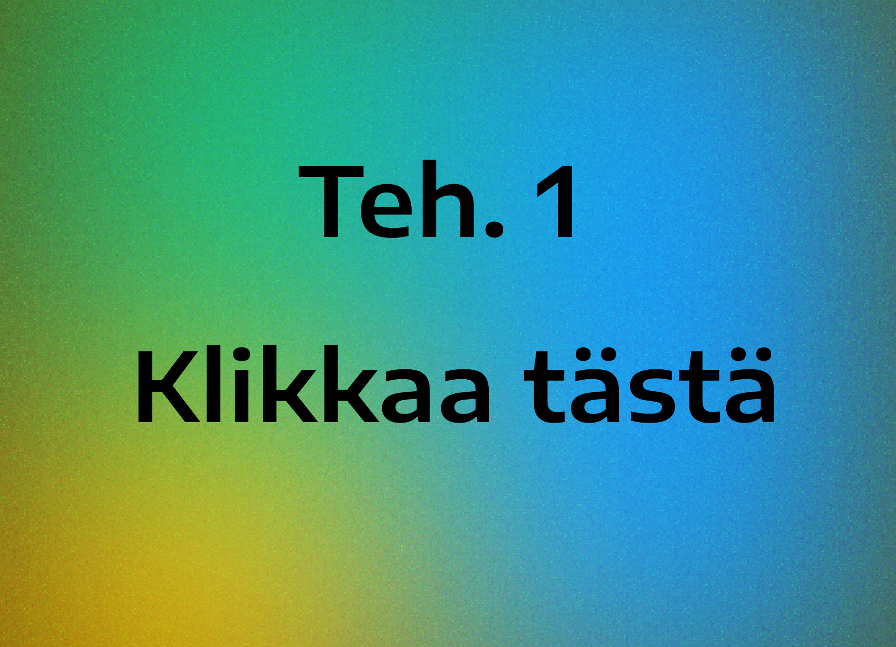
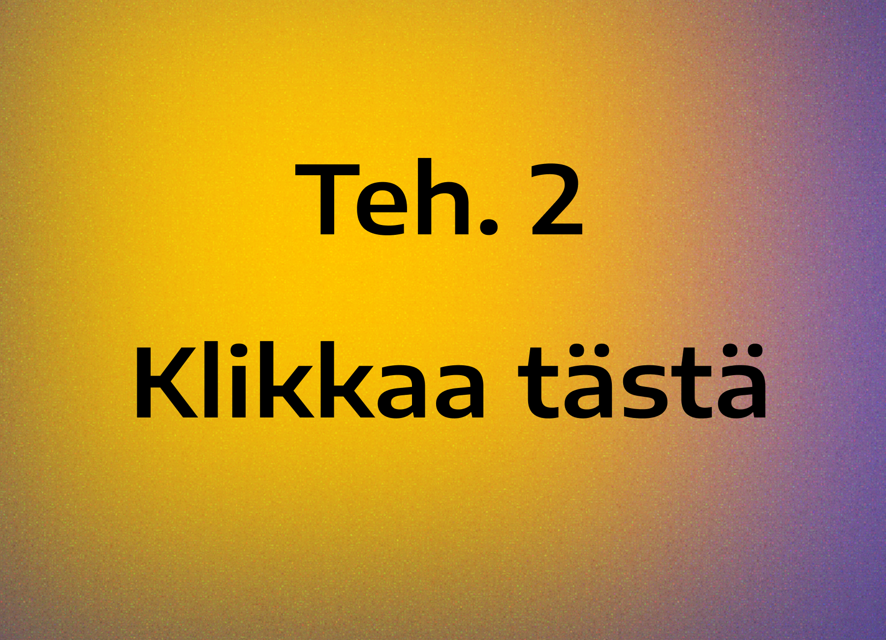
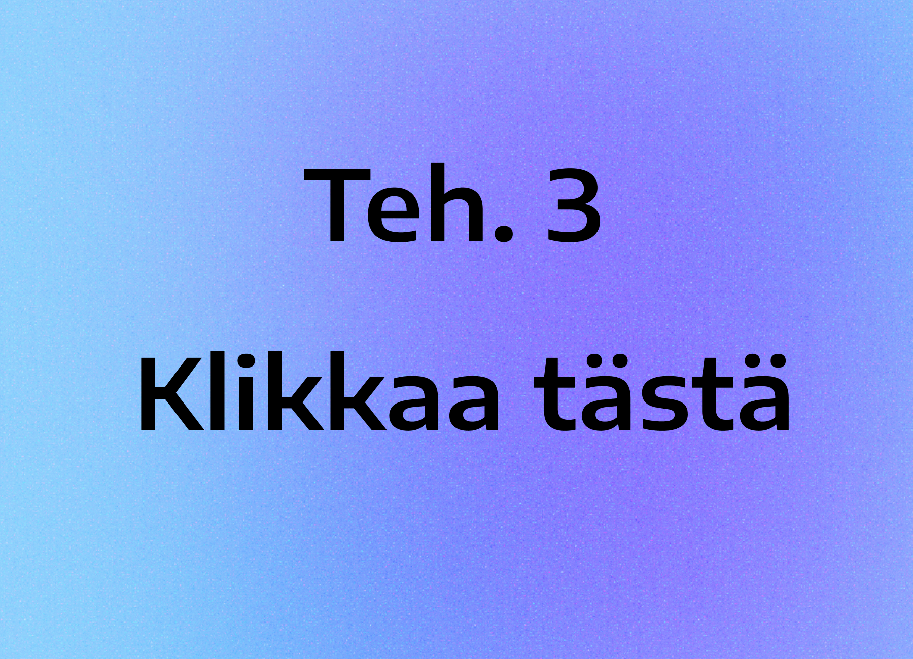
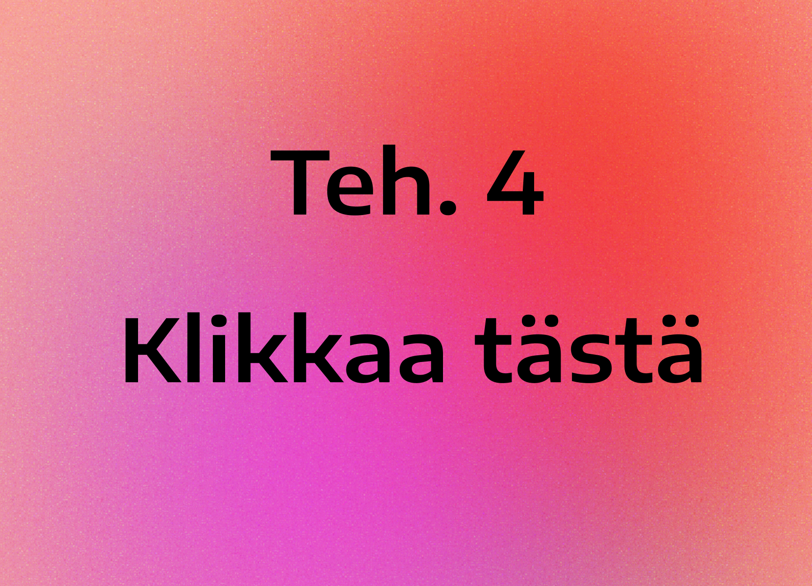
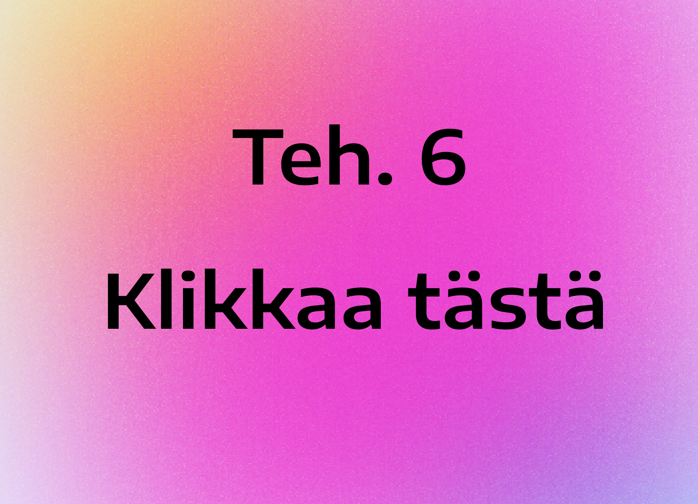

Vladimir Dovgalev
Teh 6 - Portfolio
Teh 6 - Portfolio






Ennen kurssia olin jo perehtynyt web-kehitykseen. Aiemmissa töissä käytin Dockeria, Docker Composea, CI/CD-putkia GitLabissa, Nginxiä, Gunicornia, Djangoa, HTML:ää, CSS:ää ja JS:ää sekä arkkitehtuuria ja tietokantojen konfigurointia. Deploylasin myös oikeita projekteja, esimerkiksi joennapoli.fi. Minulla oli myös kokemusta Reactista. Kurssi ei silti ollut turha Node.js oli minulle vähemmän tuttu, joten se oli uutta. Mikään ei haitannut oppimistani, koska pidän oppimisesta. En tarvinnut apua, sillä tehtävät olivat melko helppoja.
Mielenkiintoisin tehtävä oli portfolio siinä on vapaus tehdä niin kuin haluaa, esimerkiksi valita oma design tai elementtien sijoittelu. Kuten ennen kurssia, jatkan web-kehityksen opiskelua edelleen. Haluan oppia Redisin ja miten sitä käytetään oikein omissa projekteissa, sekä tutustua FastAPI:hin se kasvattaa suosiotaan ja uusia työpaikkoja ilmestyy markkinoille. Toivon löytäväni töitä web-kehityksen alalta opintojen jälkeen.